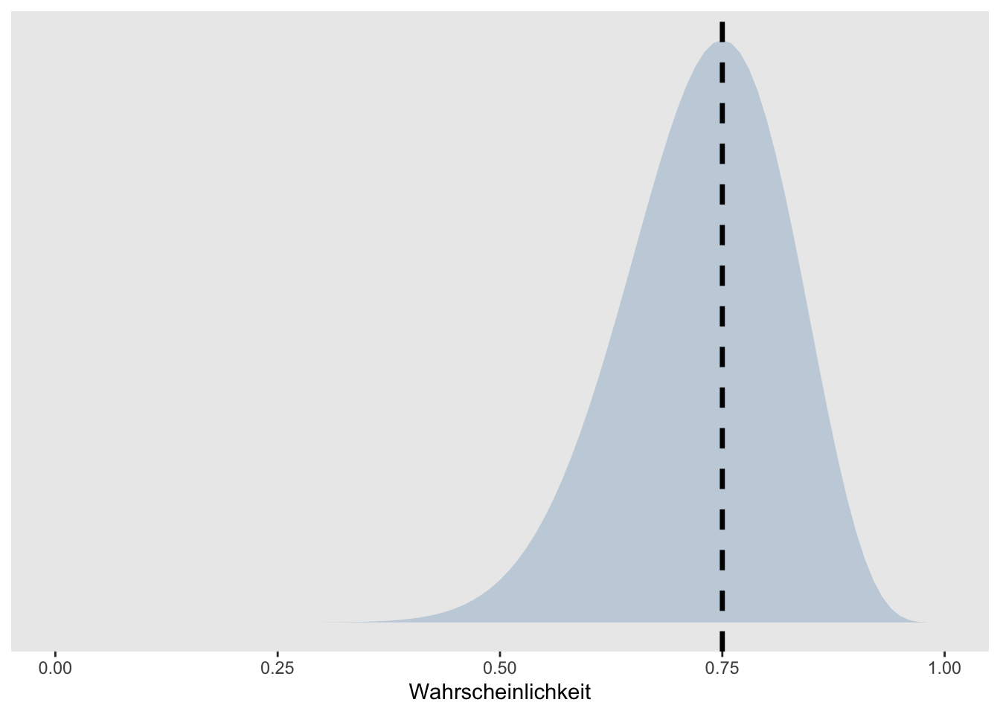

correct <- 15 # Anzahl korrekter Antworten
trials <- 20 # Anzahl Trials insgesamtParameterschätzung
Einführung in die Bayesianische Statistik I
Gerda Wyssen ![]()
Daniel Fitze
Nach dem Data Cleaning und Preprocessing geht es darum, welche Informationen die Daten über den zu untersuchenden Prozess beinhalten. Anhand der Daten sollen also Rückschlüsse auf den Prozess der zu diesen Daten geführt hat geschlossen werden. Dies wird mit folgenden Schritten gemacht
Parameterschätzung: Bei der Parameterschätzung wird ein Wert geschätzt, der den Daten zugrundeliegt. Sie erlaubt das Quantifizieren eines Parameters, z.B. der Schätzung eines Mittelwerts.
Hypothesentests: Hypothesentests vergleichen zwei Modelle, sie erlauben eine Entscheidung z.B. ist ein signifikanter Unterschied vorhanden oder nicht?
Frequentistische und Bayesianische Parameterschätzung
In der Frequentistischen Statistik wird angenommen, dass ein Parameter einen wahren (aber unbekannten) Wert hat. Die frequentistische Parameterschätzung ergibt eine Punktschätzung, der geschätzte Parameter hat damit genau einen Wert und keine Wahrscheinlichkeitsverteilung. Daher dürfen keine Aussagen über die Wahrscheinlichkeit eines Parameters gemacht werden. Nur Ereignisse die wiederholt werden können eine Wahrscheinlichkeit (eine Häufigkeitsverteilung) haben.
In der Bayesianischen Statistik hingegen wird für jeden möglichen Parameterwert geschätzt, wie wahrscheinlich dieser einzelne Wert ist. Das bedeutet wir erhalten für jeden dieser Werte eine Wahrscheinlichkeit, diese wird in der Posterior-Verteilung zusammengefasst. Der Posterior Wahrscheinlichkeit beschreibt unser degree of belief, also unser aktuelles Wissen darüber, wie wahrscheinlich dieser Parameterwert wirklich hinter den Daten steckt.
Caution
Ordnen Sie die untenstehenden Aussagen dem frequentistischen bzw. dem baysianischen Ansatz zu:
“Der Mittelwert liegt mit 95%-iger Wahrscheinlichkeit zwischen 0.75 und 0.85.”
“Wenn das Experiment 100 Mal wiederholt wird, erhalten wir zu 95% einen Mittelwert zwischen 0.75 und 0.85.”
Wir schauen uns die unterschiedlichen Ansätze der Parameterschätzung im Folgenden an einem Beispiel an. Wir haben bei einer Person z.B. beobachtet, dass Sie in 15 von 20 Trials korrekt geantwortet hat.
Maximum-Likelihood Schätzung
\(\theta\) ist der Parameterwert unter dem die beobachteten Daten am wahrscheinlichsten entstanden sind. Die beste Punktschätzung des Parameters \(\theta\), die wir machen können, wenn wir nur die Daten betrachten, und kein weiteres Vorwissen berücksichtigen, ist die Maximum-Likelihood Schätzung.
Möchten wir also z.B. schätzen mit welcher Wahrscheinlichkeit die Person beim nächsten Trial eine richtige Antwort gibt, können wir dies aus den bisherigen Trials berechnen:
\[\theta = correct / all \]
Wenn die Person also 15 Mal richtig geantwortet hat in insgesamt 20 Trials, wäre die Schätzung also
\(\theta = 15 / 20 = 0.75\)
theta <- correct / trials
theta[1] 0.75Wir erhalten eine Punktschätzung (einen Wert), die uns angibt mit welcher Wahrscheinlichkeit die Person beim nächsten Trial richtig antworten wird, nämlich 0.75, in 3/4 der Fälle.
Wenn man ganz viele Male diese Spiele wiederholen würde, dann würde man diese Messung am wahrscheinlichsten reproduzieren können, wenn man für \(\theta\) den Wert 0.75 einsetzt.
Der grosse Nachteil einer Punktschätzung ist es, dass wir keine Wahrscheinlichkeitsverteilung erhalten. Es gäbe auch noch viele andere Parameterwerte, die dieses Ergebnis von 15 korrekten Antworten in 20 Trials hervorbringen könnten, diese werden bei der Punktschätzung nicht beachtet.
Um das zu veranschaulichen plotten wir die Wahrscheinlichkeit von 15 korrekten Antworten in 20 Trials für alle Werte welche \(\theta\) annehmen könnte. Diese Werte liegen zwischen 0 und 1, da wir von einer Wahrscheinlichkeit sprechen.
tibble(x = seq(from = 0, to = 1, by = .01)) %>%
mutate(density = dbinom(15, 20, x)) %>%
ggplot(aes(x = x, ymin = 0, ymax = density)) +
geom_ribbon(size = 0, alpha = 1/4, fill = "steelblue") +
geom_vline(xintercept = theta, linetype = 2, linewidth = 1.2) +
scale_y_continuous(NULL, breaks = NULL) +
coord_cartesian(xlim = c(0, 1)) +
xlab("Wahrscheinlichkeit") +
theme(panel.grid = element_blank(),
legend.position = "none")Warning: Using `size` aesthetic for lines was deprecated in ggplot2 3.4.0.
ℹ Please use `linewidth` instead.
Die Punktschätzung von \(\theta\) wird mit der schwarzen gestrichelten Linie dargestellt. Die hellblaue Fläche zeigt, wie wahrscheinlich die einzelnen Werte jeweils sind (hier abgebildet sehen Sie relative Wahrscheinlichkeiten.
Hands-on: Punktschätzung
Diskutieren Sie in kleinen Gruppen, wie sinnvoll es ist sich hier auf einen Wert festzulegen:
Wie genau denken Sie bildet die Punktschätzung die Realität ab?
Wie viel wahrscheinlicher ist das berechnete \(\theta\) von 0.75 im Vergleich zu einem \(\theta\) von 0.70?
Was kann das Schätzen der Wahrscheinlichkeit für alle Parameterwerte für einen Mehrwert bringen?
Posterior-Schätzung in der Bayesianischen Statistik
In der Bayesianischen Statistik wird die Wahrscheinkeitslehre angewandt, um die Wahrscheinlichkeit von Parameterwerten zu berechnen. Im Gegensatz zu der Frequentistischen Statistik wird nicht nur ein “wahrer Wert” geschätzt, sondern eine Verteilung. Es wird also für jeden möglichen Parameterwert eine Wahrscheinlichkeit geschätzt.
Der Posterior wird also über alle möglichen Parameterwerte integriert, was ein wesentlicher Vorteil der Bayesian Statistik ist. So wird nicht nur der wahrscheinlichste Parameterwert berücksichtigt (Punktschätzung), sondern durch das Einbeziehen der ganzen Parameterverteilung können auch Nebenoptima und “fast” genauso wahrscheinliche Werte einbezogen werden.
Um die Wahrscheinlichkeit von Parametern zu berechnen wird in der Bayesianischen Statistik das Bayes Theorem verwendet.
Bayes Theorem
Das Bayes Theorem gibt die Formel für eine bedingte Wahrscheinlichkeit \(P(A|B)\) an.
\[ P(A|B) = \frac{P(B|A)⋅P(A)}{P(B)} \]
Das kann gelesen werden als:
“Die Wahrscheinlichkeit eines Ereignisses A unter der Bedingung, dass ein Ereignis B wahr ist, ist gleich der a priori Wahrscheinlichkeit, dass A wahr ist, multipliziert mit der Wahrscheinlichkeit, dass B eintritt, wenn A wahr ist. Dividiert wird das Ganze durch die Wahrscheinlichkeit, dass B eintritt, egal ob A wahr oder falsch ist.”
Das bedeutet, um eine Bayesianische Parameterschätzung zu machen, müssen wir Vorwissen integrieren. Dies tun wir in Form einer Prior-Verteilung. Ein sehr simple Variante ist, den Prior ist so zu wählen, dass er allen möglichen Werten dieselbe Wahrscheinlichkeit zuschreibt (wie in der Grafik unten). Dies ist aber selten empfehlenswert, darauf wird später noch eingegangen.
Parameterschätzung

Hands-on: Bayesianische Parameterschätzung in JASP
Aktivieren Sie in JASP das Modul “Learn Bayes”. Wählen Sie unter “Learn Bayes”: “Binomial Estimation”. Wählen Sie “Enter Sequence”.
Stellen Sie sich vor, sie untersuchen eine Person, welche behauptet, extrasensorische Fähigkeiten zu besitzen. Diese Person behauptet, dass vorhersagen kann, auf welcher Seite eine Münze landet, bevor sie geworfen wurde. Sie werfen die Münze 10 mal und die Person macht 7 korrekte Vorhersagen.
Welche Fragen könnten von Interesse sein?
Wie würden Sie die Behauptung der Person überprüfen?
Glauben Sie, dass die Person über extra-sensorische Fähigkeiten verfügt? Sind Sie skeptisch?
Unter den Dropdown Menus Model, Prior and Posterior Distributions und Plots gibt es verschiedene Checkboxes. Versuchen Sie herauszufinden, was diese bewirken.
Wie können Sie Ihr Vorwissen in die Analyse einbeziehen? Wie verbinden Sie Ihr Vorwissen mit den beobachteten Daten?
Wrap-up
Zusammenfassend kann gesagt werden:
In der frequentistischen Statistik wird angenommen, dass der Parameter einen wahren Wert hat, den wir aber nicht kennen. Wir erhalten eine Punktschätzung für den Parameter.
In der bayesianischen Statistik nehmen wir an, dass der Parameter eine Wahrscheinlichkeitsverteilung hat, die wir schätzen können. Es muss zusätzlich eine Priorverteilung festgelegt werden. Wir erhalten eine Posterior Verteilung für die Parameterwerte.
Reuse
Citation
BibTeX citation:
@online{wyssen,
author = {Wyssen, Gerda and Ellis, Andrew and Fitze, Daniel},
title = {Parameterschätzung},
url = {https://kogpsy.github.io/neuroscicomplabFS24//pages/chapters/data_analysis_parameterestimates.html},
langid = {en}
}
For attribution, please cite this work as:
Wyssen, Gerda, Andrew Ellis, and Daniel Fitze. n.d.
“Parameterschätzung.” https://kogpsy.github.io/neuroscicomplabFS24//pages/chapters/data_analysis_parameterestimates.html.